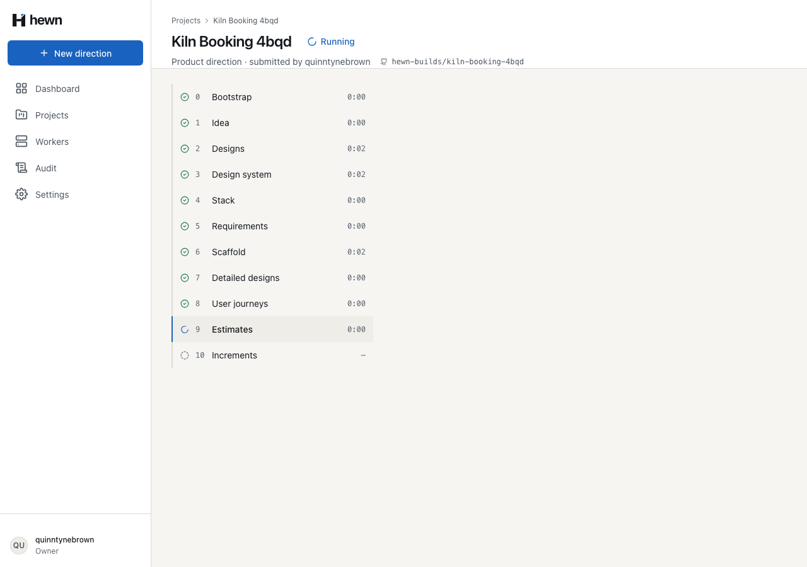
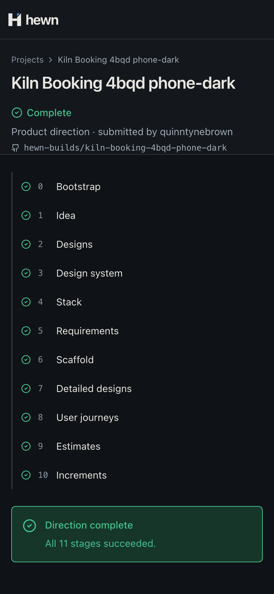

Brief, stack, requirements, detailed designs and user journeys: written, validated and committed.
grilling → docs/brief.md
no skill → docs/adr/0001-stack.md
engineering-requirements → docs/specs/L1.md, L2.md
writing-software-design-documents → docs/detailed-designs/
no skill → docs/journeys.md
may append to docs/decisions.md
## 2026-11-09 · Stage 4 Stack **Question:** Which stack should the product use? **Answer:** .NET 10 (LTS) backend with an Angular 21 frontend **Rationale:** No stack was named, so the default applies (L2-013).
Each question and answer is also written to the run log.
for (const [path, hash] of await snapshot(directory)) {
if (before.get(path) === hash) continue;
if (path === DECISIONS || definition.outputs.some((o) => (o.endsWith('/') ? path.startsWith(o) : path === o))) {
files.push({ path, content: await readFile(join(directory, path)) });
} else {
await context.log('warn', `Ignored a change outside this stage: ${path}`);
}
}
await context.commit(COMMIT_STEP, definition.commitMessage, files);
expect(validateRequirements(dir)).toEqual([ 'Duplicate ID: L2-002', 'L2-004 traces to L1-009, which does not exist', 'L1-003 has no L2 requirement', 'L2-005 has no Given/When/Then criterion', 'L2-005 uses "should"', ]);
## Core features - Sign in - Main workflow — booking firing slots for a shared pottery kiln - Review history ## Out of scope - Native mobile apps
Archive, fencing, each stage's paths
17 validator, 6 executor
The pipeline runs the document stages for real

